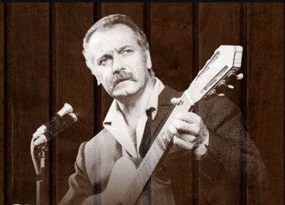

Le parapluie
The umbrella
Georges Brassens (1952)
|
|
|
(1) Comme pour la plupart des chansons de Brassens sur ce site, la note ci-après est tirée du blog de David Yendley (http://dbarf.blogspot.fr/2012/05/alphabetical-list-of-my-brassens-songs.html). Ma traduction chantable anglaise est basée sur sa traduction en prose. (2) "Le vers final de la chanson ne présente pas cette anecdote comme le début dune idylle, dès lors que la belle passante rentre chez elle pour oublier le porteur de parapluie. [Remarque: en fait, la phrase "je la vis ... partir ... vers mon oubli" signifie que c'est Brassens qui s'apprête à oublier la dame]. On a souvent supposé que ce poème décrivait la rencontre fortuite de Brassens et Joha Heiman, du fait que la jeune dame sous le parapluie est « toute petite » et que le Brassens donnait à sa compagne le surnom affectueux de Püppchen- « Petite poupée. Dans un entretien à la télévision, [...] Brassens parlait un jour des chansons que lui avait inspirées son amour pour Püppchen. Il en cita quatre aussitôt: Le Parapluie nen faisait pas partie Cependant, il disait quil y en avait plein dautres." |
(1) Like for most of the Brassens songs at this site, the following note is borrowed from David Yendley's blog (http://dbarf.blogspot.fr/2012/05/alphabetical-list-of-my-brassens-songs.html). My singable translation is based on his prose translation. (2) "The final verse of the song does not see the event it describes as the start of a love affair, saying that the young lady was going home to give no further thought to him. [Note: in fact, the French sentence "je la vis ... partir ... vers mon oubli" suggests that it is Brassens who is about to forget the young lady] It is often assumed that the poem describes a chance meeting between Brassens and Joha Heiman, mainly from the description of the young lady under his umbrella. Brassens affectionate name for his lifelong partner was his Püppchen- his Little Doll. In a conversation with Georges Brassens, [...] Brassens spoke of his songs which had been inspired by his love of his Püppchen. Surprisingly in the four songs he quoted on the spot, Le Parapluie did not appear however he said there were many others." |
|
 Brassens chante "Le parapluie" |